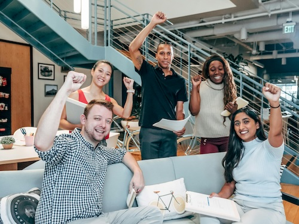

Your Safe Space for Holistic Psychotherapy
Welcome to my Psychotherapy Practice
I offer a holistic and inclusive approach to mental health and well-being. My name is Darren Peters, and I specialize in helping individuals heal from trauma and navigate various challenges related to their identities and life experiences. I provide a safe, non-judgmental space where clients can explore their thoughts, feelings, and experiences in a supportive and affirming environment.
My practice is grounded in cultural sensitivity, and I am committed to providing tailored support to clients from diverse backgrounds, including LGBTQ+, racial and ethnic minorities, neurodivergent individuals, and those seeking to explore their spiritual and metaphysical experiences. I draw from various therapeutic modalities to create a personalized treatment plan that meets each client's unique needs and goals.
Whether you're seeking support for a specific issue or looking to deepen your self-understanding and personal growth, I am here to walk alongside you on your journey. Together, we can work towards building resilience, developing healthier coping mechanisms, and fostering greater self-acceptance and well-being.
My Specialty Areas
Neurodiversity
Embrace Your Neurodivergent Mind: A Supportive Space for Celebrating Uniqueness and Building Strengths.
Neurodivergent Minds

Embracing Neurodiversity: Celebrating Uniqueness and Thriving Together
Neurodiversity and Accessibility is very important, where I recognize and celebrate the rich tapestry of neurodivergent minds. As an Integrative Psychotherapist, I am committed to creating an inclusive and supportive space that values the strengths and unique processing styles of each individual.
Strengths of Neurodivergent Minds
Neurodiversity is the acknowledgment that neurological differences, such as autism, ADHD, Tourette's, dyslexia, and dyspraxia, are natural variations of the human brain. Each neurodivergent mind comes with its own set of strengths and attributes that contribute to the diversity of human experience.
- Autism's Positive Attributes: Individuals with autism often exhibit heightened attention to detail, strong pattern recognition, and intense focus. These qualities can lead to innovative thinking and problem-solving skills.
- ADHD's Creativity and Energy: ADHD can bring a surge of creativity, hyperfocus, and high energy levels. Many individuals with ADHD excel in dynamic, fast-paced environments and demonstrate out-of-the-box thinking.
- Tourette's Unique Perspectives: Tourette's may be associated with unique motor and vocal tics, but it can also bring about heightened creativity and unique perspectives, as seen in many accomplished individuals.
- Dyslexia's Visual Thinking: Dyslexia often involves challenges in traditional reading and writing, but individuals may possess strong visual-spatial thinking, creativity, and problem-solving skills.
- Dyspraxia's Creativity and Resilience: Dyspraxia may involve motor coordination difficulties, but individuals often demonstrate creativity, resilience, and unique problem-solving abilities.
Reducing Stigmatization and Embracing Uniqueness
My therapeutic practice is designed to be inclusive and tailored to the individual needs of neurodivergent clients should you 'identify' as such. We will work collaboratively to explore and embrace the unique strengths of your neurodivergent mind. Our goal is to reduce stigmatization and create a supportive environment where you can thrive.
How Therapy Can Help
- Self-Discovery: Explore and understand your unique strengths and challenges.
- Strategies: Develop effective coping strategies for navigating daily life.
- Building Confidence: Cultivate confidence and self-acceptance.
- Relationships: Enhance communication and relationship skills.
A Commitment to Accessibility
I will be dedicated to providing an accessible environment for individuals with diverse needs. Whether it's accommodating sensory sensitivities or ensuring communication preferences are met, your comfort and accessibility are the priority.
Begin Your Journey to Thriving
If you are seeking a therapist who understands and celebrates neurodiversity, someone who recognizes the strengths and beauty within neurodivergent minds, I invite you to embark on a journey of self-discovery and one that aims to reduce societal pressures, misunderstandings, and stigmatisation.
Ascension/Spiritual Identity
Embark on a Transformative Journey of Soulful Healing with Transpersonal Psychotherapy and Ascension Activation.
Ascension/Spiritual Identity

Embark on a Transpersonal Journey: Connecting to Your Soul's Wisdom
Spiritual Exploration is growing more and more in todays times. I can hold a deep and connected energy for anyone wanting to delve into the depths of their soul and transcend the boundaries of conventional therapy. As a Transpersonal Psychotherapist, my approach is rooted in the understanding that healing goes beyond the individual self, reaching into the spiritual dimensions of existence and opening up the path of Ascension more consciously.
My Personal Journey

In this sacred space, I hold a profound awareness of the importance of not colluding with spiritual bypassing. We must acknowledge the challenges of this 3D reality and work through them authentically, avoiding shortcuts that may offer temporary relief but hinder true growth. The path to healing involves navigating the shadows and integrating all aspects of the self.
Connecting to Ascended Realms
As a neurodivergent Highly Sensitive Empath, I bring a unique perspective to our sessions. I am not only attuned to the energies of this earthly realm but also hold a deep connection to the ascended realms. This allows me to serve as a conduit of light, assisting you in raising your vibration and frequency. Together, we explore the expanses of higher consciousness, fostering spiritual growth and awakening.
A Journey of Light and Consciousness
Our sessions are a co-creative process, a sacred dance between client and therapist. We embark on a journey of light and consciousness, navigating the intricacies of your spiritual path. Whether you are seeking to reconnect with your soul’s purpose, explore higher realms of existence, or integrate spiritual experiences into your daily life, this space is designed for your unique journey.
What to Expect
- Exploration: I am able to go beyond the personal self, exploring the interconnectedness of mind, body, and spirit through the use of creative imagination.
- Healing: I will honour your experiences and work through them authentically, avoiding spiritual bypassing which many do when opening up to spiritual aspects of higher consciousness.
- Guidance: Drawing from the ascended realms, we tap into higher frequencies for healing and transformation with the assistance from Ascended Master frequencies and designated Rays of light from St. Germain, Quan Yin, Lady Portia and more.
- Activation: Holding the awareness that we are multifaceted beings beyond our physical self, our sessions will activate the many layers of your multi-dimensional self.
Are You Ready to Illuminate Your Spiritual Path?

If you are seeking a therapeutic journey that transcends the ordinary, I invite you to explore the transformative possibilities of Transpersonal Psychotherapy & Ascension Activation with me. Together, we navigate the realms of spirit, fostering healing, and awakening to the brilliance of your soul.
Exploring the Impact of RACE/Racial Identity
Navigate Racial Identity and Trauma with Culturally Sensitive Healing: Fostering Empathy and Building Allyship in a Divisive World.
Exploring the Impact of RACE/Racial Identity
Culturally Sensitive Healing: Navigating Trauma and Building Allyship
In a society where the topic of Race is becoming more and more divisive, being culturally sensitive is a huge aim of my work to create a powerful healing space. One where I acknowledge and address the profound impact of trauma on individuals from diverse backgrounds if they are ready to explore the impact race has had on their life. In this therapeutic journey, we will recognize the interconnectedness of race, trauma, cultural identity, and the need for understanding and healing.
Understanding Unconscious Trauma
Many individuals, particularly those from Black and oppressed communities, carry the weight of historical and systemic trauma. Dr. Joy DeGruy's groundbreaking work on Post Traumatic Slave Syndrome has shed light on the intergenerational impact of slavery and oppression. It's crucial to recognize that trauma may be deeply ingrained, often unconsciously affecting individuals, families and communities.
As we embark on this healing journey, my approach is rooted in empathy, cultural awareness, and a commitment to addressing the unique challenges faced by those who have been historically marginalised.
Acknowledging White Fragility
Recognizing and dismantling systemic issues also involves understanding the complexities of privilege. Dr. Robin DiAngel's work on White Fragility highlights the challenges that the white community may face in acknowledging and addressing their unconscious biases. My goal is not to place blame but to foster understanding, growth, and allyship. As a black male psychotherapist I am a most definitely a minority and therefore know 1st hand what it is like to have a therapist who is not black and therefore unable to acknowledge, work though and assist my processing of the intergenerational trauma that comes with being black.
I therefore can not say I am the best person to work with White Europeans who want to look at their unconscious bias but I will be open to attempting to assist because the book 'Dying of Whiteness' by Jonothon Meltz has identified that race and racism hurts us ALL. I am prepared to be an Ally to any white person grappling with their racial identity and what comes with being white.
The Path to Allyship
For those in the white community, acknowledging and dismantling ingrained biases is a courageous step toward becoming effective allies. It involves actively listening, educating oneself, and committing to challenging the structures that perpetuate inequality. I will provide a supportive space for individuals who wish to navigate this path, fostering empathy, awareness, and allyship.
My Therapeutic Approach
In my practice, I use an intersectional lens to explore the unique intersection of race, culture, gender, sexual orientation, and other facets of identity. Our sessions will be designed to create a safe and inclusive space where individuals can explore their experiences, build resilience, and work towards healing.
Healing Together
Trauma affects us all, directly or indirectly. By fostering a culturally sensitive environment, I aim to bridge gaps, cultivate empathy, and contribute to the collective healing of our community. It's through understanding, compassion, and a commitment to change that we can work towards a more just and equitable society.
If you're ready to embark on a journey of self-discovery, healing, and building allyship, I invite you to get in touch. Together, we can create a space where healing is not only individual but extends to the broader community.
LGBTQ Identity
Embark on a Transformative Journey of Soulful Healing with Transpersonal Psychotherapy and Ascension Activation.
LGBTQ Identity
Celebrating Diversity: LGBTQ Inclusive Healing Space
LGBTQ Inclusivity Healing Space, where diversity is not just acknowledged but celebrated. As an Integrative Transpersonal Psychotherapist, I bring a wealth of therapeutic modalities, but more importantly, I draw from my lived experiences as a proud member of the LGBTQ community to offer a space where you can be authentically yourself.
Understanding the Unique Struggles
Being a part of the LGBTQ community comes with its own set of challenges. From the struggles of self-discovery and coming out to navigating the complexities of sexual orientation and gender identity in a heteronormative world, every journey is unique. As someone who has walked this path, I understand the importance of creating a safe and understanding space for you to explore and heal.
Acknowledging Disparities
It's essential to recognize the disparities that persist within the LGBTQ community. Disturbingly, LGBTQ youth face higher rates of homelessness and suicide compared to their non-LGBTQ peers. This reality underscores the need for compassionate and tailored therapeutic support. I not only acknowledge these disparities and work together to foster resilience, healing, and empowerment, I have experienced some of these struggles myself. I am therefore committed to help anyone on that journey of confusion, rejection and isolation feel understood, heard and begin to heal with love and acceptance.
Inclusive Therapeutic Approach
My approach as an Integrative Psychotherapist is informed by a range of modalities, allowing us to tailor our sessions to your unique needs. I integrate LGBTQ-affirmative therapy principles, recognizing the importance of addressing the specific challenges faced by the community, such as discrimination, stigma, and family dynamics.
Drawing Inspiration from LGBTQ Activists and Authors
I draw inspiration from the resilience of LGBTQ activists and authors who have paved the way for progress. From Marsha P. Johnson and Sylvia Rivera, who ignited the modern LGBTQ rights movement, to contemporary voices like Janet Mock and Roxane Gay, their stories remind us of the strength and beauty within our community.
Creating a Safe and Affirming Space
Our therapy sessions are designed to be a safe and affirming space where you can explore your identity, relationships, and aspirations. Whether you are navigating the complexities of coming out, dealing with discrimination, or simply seeking a supportive space to process your experiences, you are welcome here.
Healing Together
Beyond the therapeutic techniques, our sessions will be about building a connection and fostering healing. Together, we navigate the challenges, celebrate your triumphs, and work towards a more fulfilling and authentic life.
Let's Begin Your Journey
If you are seeking a therapist who understands the nuances of the LGBTQ experience, someone who has walked a similar path, get in touch, and lets begin your healing journey safely and authentically. Together, we can explore, heal, and celebrate the beautiful tapestry of your identity.
Adverse Childhood Experiences (ACEs)
Breaking Free from Early Adversity: Trauma-Informed Therapy for Overcoming the Effects of Adverse Childhood Experiences (ACEs)
Adverse Childhood Experiences (ACEs)

As an Integrative Psychotherapist, I bring a unique perspective to this journey, having personally scored 7/10 on the Adverse Childhood Experiences (ACE) test This shared experience fuels my commitment to providing trauma-informed therapy that recognizes and supports individuals in overcoming the challenges that arise from early adversity.
What Are Adverse Childhood Experiences (ACEs)?
Adverse Childhood Experiences are stressful or traumatic events that occur during childhood, such as abuse, neglect, or household dysfunction. These experiences can have a profound impact on the developing brain and contribute to long-term physical and mental health challenges.
The Unseen Impact
Many individuals may not realise the lasting impact of ACEs on their lives. The effects can be subtle, yet pervasive, influencing our relationships, careers, and overall well-being. Even a single ACE in childhood has been linked to increased risks of substance abuse, difficulties maintaining relationships, challenges in employment, and heightened suicidal ideation in adulthood.
The Importance of Trauma-Informed Therapy
Understanding and addressing the effects of ACEs require a trauma-informed therapy approach. This means recognizing the prevalence of trauma, understanding its impact, and creating a therapeutic environment that promotes safety, trust, and empowerment. As someone who navigates the aftermath of ACEs, I bring a profound awareness to the therapeutic space.
Key Components of Trauma-Informed Therapy for ACEs
- Safety: Creating a safe and secure therapeutic environment where clients can explore their experiences without fear of judgment.
- Trust: Building a trusting therapeutic relationship that allows for open communication and vulnerability.
- Empowerment: Fostering a sense of empowerment, helping clients regain control over their narrative and responses to triggers.
Breaking the Cycle
Trauma-informed therapy is not just about understanding the impact of ACEs but also about breaking the cycle. Together, we explore strategies to overcome challenges, cultivate resilience, and build a foundation for a more fulfilling and empowered life.
Your Journey to Healing
If you suspect that ACEs may be influencing your life or if you're already aware of their impact, know that you are not alone. Our therapy sessions are crafted to be a safe space for exploration, understanding, and healing. Together, we embark on a journey towards breaking free from the chains of early adversity and creating a future defined by resilience and well-being.

Darren Peters
Psychotherapist
Welcome!
My Experience, Skills and Qualifications
I bring to my practice over 20 years of experience supporting vulnerable clients in various settings, including the charity sector, national health service, housing, and mental health. My diverse background has allowed me to work with a wide range of individuals, including those involved in the criminal justice system, the homeless population, and those struggling with substance abuse and dual diagnosis. These experiences have honed my ability to work sensitively and effectively with clients from all backgrounds and with a variety of challenges and vulnerabilities.
In addition to my practical experience, I hold a Post Graduate Integrative Psychotherapy Diploma accredited by the BACP. This multidisciplinary approach informs my work and allows me to tailor my interventions to the unique needs and circumstances of each client. My commitment to ongoing learning and professional development ensures that I stay current with the latest research and best practices in the field, further enhancing my ability to provide high-quality, evidence-based care.
Testimonials
"Darren possesses an extraordinary gift for holding space that goes beyond the ordinary. His deep empathy and sensitivity create an atmosphere where individuals genuinely feel heard and seen. In the realm of mental health, where vulnerability is paramount, Darren's ability to foster a sense of psychological safety is truly exceptional."
"As I have been working with Darren for the past two and a half years I have come to know someone who not only has a great range as a trained therapist, but also experienced guidance and activation through spiritual guidance. Darren truly leads, by intuition. He has great capacity to provide insights that are understandable and relatable to my own experience and journey. He plants seeds for me to care for in my own way and understanding."
Work with me online from anywhere
I look forward to hearing from you.
Contact Form
Email me directly at:
info@darrenpeters.ukYour feedback is valued
Darren Peters welcomes your feedback on the accessibility of this website. If you encounter accessibility barriers on the Darren Peters - Your Safe Space for Holistic Psychotherapy website, please let Darren know by completing the feedback form in the link provided below.